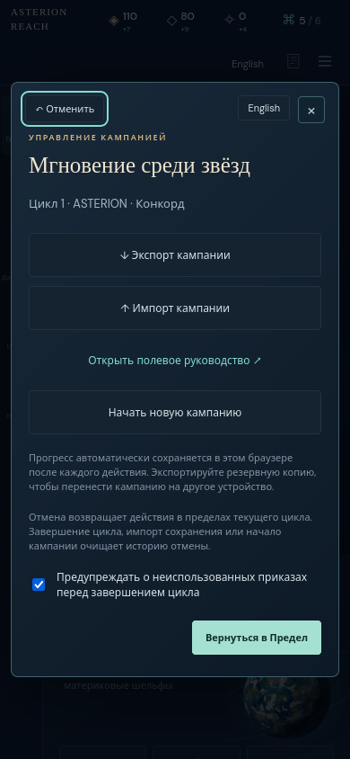
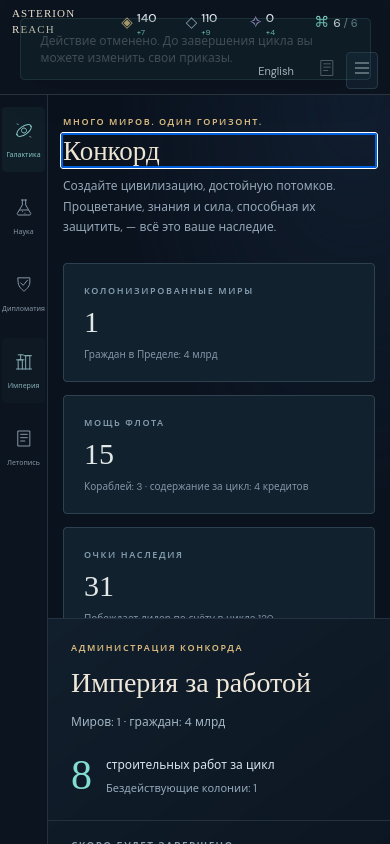
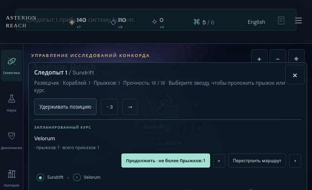

Ordinary research and a paid construction project rewind exactly, including after reload. Modal Undo is reachable by forward Tab and returns focus to a visible location. Tapping a world on the narrow layout inspects it without selecting a fleet. Explicit fleet movement pays normally, and closing fleet controls preserves the entire route state. Two minor Russian route-string leaks were reported separately.
Reviewed frozen build 0.23.0, source 635e8256af87327aa8a4eab92bb6d95baede5fe5, served at http://127.0.0.1:41371. Source and built-asset hashes are in pins.json; no source copies are included. This review used native Firefox with desktop 1440 × 1000 English and 390 × 844 Russian viewports. The narrow context used hasTouch: true and actual Playwright taps. This is viewport/touch emulation, not Firefox mobile emulation or a physical-device test. A bounded 640 × 390 landscape follow-up reused the movement context.
| Flow | Observed result | Evidence |
|---|---|---|
| Research → Undo → repeat | Both languages restore the exact fresh default state, then repeat the same research state. Undo becomes disabled after the last action. | Results and state hashes |
| Research + paid Lab → reload → modal Undo | The 30-credit, 30-mineral purchase survives reload. Forward Tab reaches the visible modal Undo; Enter on desktop and Space on narrow restore the exact researched state and full payment. | Actions, focus sequence, equality assertions |
| Restored keyboard focus | Desktop focuses enabled Undo. Narrow focuses the visible Empire heading “Конкорд”. Ctrl+Z then restores the original research state exactly. | Desktop · Narrow |
| End Cycle boundary | Cancel preserves state and history. Confirm advances to cycle 2, disables Undo, and clears its browser storage. Ctrl+Z cannot cross that boundary; reload preserves the new cycle. | Desktop · Narrow |
| World inspection and explicit fleet selection | Velorum world tap leaves no selected fleet or route strip. Explicitly selecting the Pathfinder displays controls and a course preview without changing state. | Inspection · Explicit selection |
| Held route → close | Plotted Solace → Sundrift → Velorum, then held the scout. Closing controls changes no campaign data and focuses Fleet roster. | Held · Closed, same hash |
| Move → close → Undo → repeat | Explicit Solace → Sundrift movement spends one order and one movement. Closing keeps the remaining Velorum route. Undo exactly restores the held state; the same visible move at 640 × 390 reproduces the original moved state. | Moved · Closed · Undone · Landscape repeat |
There were 22 complete state equality assertions, zero uncaught page errors, and zero HTTP responses at or above 400. Every recorded view had no page-wide horizontal overflow. These are focused acceptance checks; the existing broad test suites were not rerun.


Up to 1 приказ now; stops for new contacts, discoveries or combat. The surrounding route UI is Russian. See rendered receipt and screenshot.· Holding position. See rendered receipt and screenshot.Both are presentation defects. They do not change route behavior, Undo state, costs, or focus. The smallest correction is to cover these actual interpolation variants in localization; no mechanics change is indicated. Root received the original evidence before any correction.

Run from the repository with the frozen server available:
node docs/mechanics-depth/firefox-review/review.cjs
node docs/mechanics-depth/firefox-review/mobile-driver.cjs < docs/mechanics-depth/firefox-review/mobile-requests.jsonlThese commands overwrite this review directory’s generated receipts; copy the scripts to a separate directory within the repository before reproducing if the frozen evidence must be preserved. Desktop/narrow driver · Mobile driver · Original mobile receipts · Summary · Manifest.
Fresh default campaigns were used with ordinary UI commands. No save fixtures, resource grants, engine mutations, or production edits were made. The read-only state hook supplied equality checks. The first interactive mobile launch had closed stdin after startup and was replaced before any campaign action; both startup records remain. Request 8 then used an absent self-target connection after Undo had already restored Sundrift as target. Request 9 used the already-visible Move button and passed exact equality. This preserved driver error is separate from the two product wording findings.